Una guida con le fotografie dell'app. Leggi solo il pezzo che ti serve. Tocca una foto per ingrandirla.
1Le tue mappe
Il docente ti dà una cartella con dentro una mappa. Puoi riceverla in due modi:
in classe, con il bottone Docente (vedi il capitolo 11);
a mano: apri l'app File dell'iPad, vai in Sul mio iPad › MappAI Studente e mettici la cartella.
Quando apri MappAI studente vedi la pagina Studia. Tocca una mappa nella colonna a sinistra:
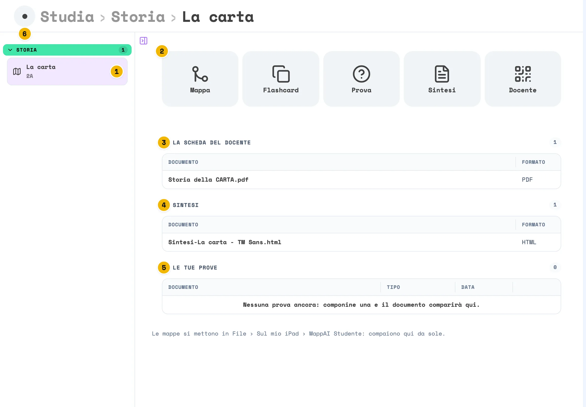
Le tue mappe, divise per materia. Tocca quella che vuoi studiare.
Cinque bottoni: Mappa, Flashcard, Prova, Sintesi, Docente.
La scheda del docente: il documento da cui è nata la lezione. Toccalo per leggerlo.
Sintesi: il riassunto della mappa, da leggere o da ascoltare.
Le tue prove: le prove che hai già fatto (vedi il capitolo 9).
Il pallino apre la Cabina: il carattere dell'app e questa guida.
Se una mappa non compare: controlla che dentro la cartella ci sia il file index.yaml. Se manca, chiedi al docente di mandarti di nuovo la cartella.
2Guardare la mappa
Tocca Mappa. La mappa si apre come un albero: l'argomento in alto, i rami sotto.
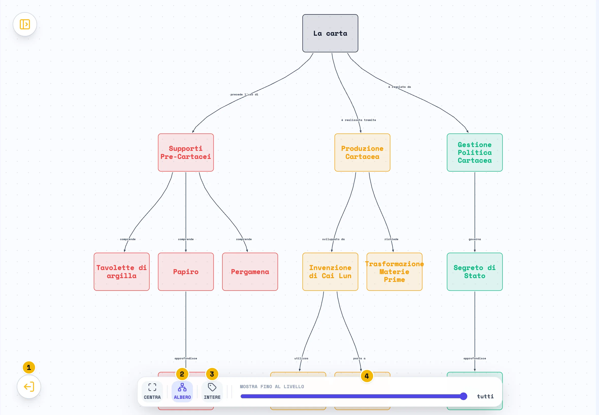
Il menu della mappa (capitolo 3).
La vista. Dice quella che stai guardando: tocca per passare da MAPPA ad ALBERO, FASCI e DAG.
Le parole sulle frecce: tocca per averle INTERE, BREVI o per toglierle (NO).
Mostra fino al livello: trascina il pallino a sinistra per vedere meno livelli, a destra per vederli tutti.
Con due dita ingrandisci, rimpicciolisci e sposti la mappa.
Leggere che cosa dice un nodo
Tieni premuto il dito su un nodo per un attimo. Si apre un menu:
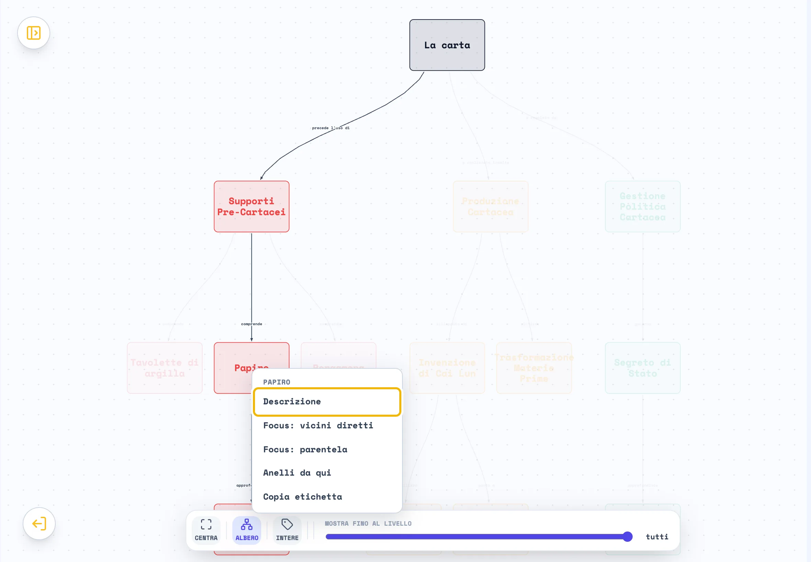
Tieni premuto «Papiro»: il menu.
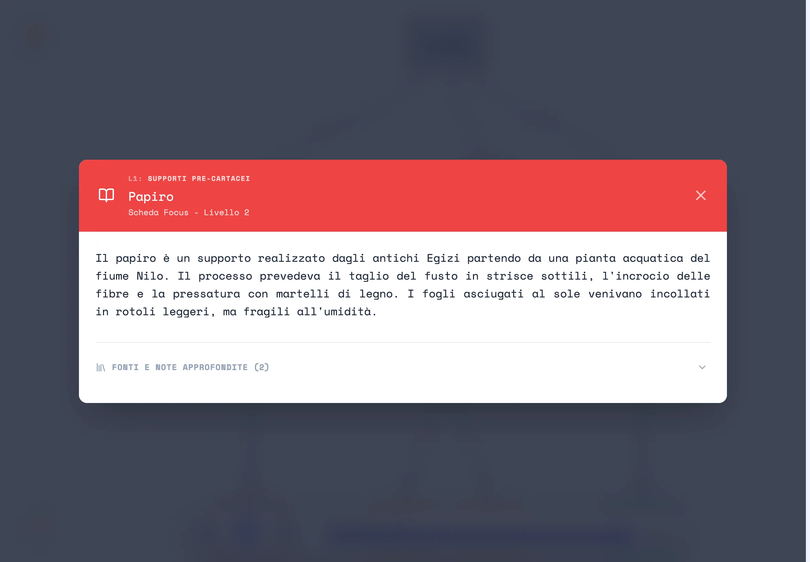
Tocca «Descrizione»: il testo del nodo.
Descrizione: il testo del nodo, con le fonti.
Focus: vicini diretti e Focus: parentela: la mappa mostra solo quel nodo e quelli collegati. Per uscire tocca Chiudi il focus.
Copia etichetta: copia il nome del nodo.
Nella vista ALBERO un tocco solo su un nodo non apre niente: tieni premuto.
3Il menu della mappa
Il bottone giallo in basso a sinistra apre tre comandi:
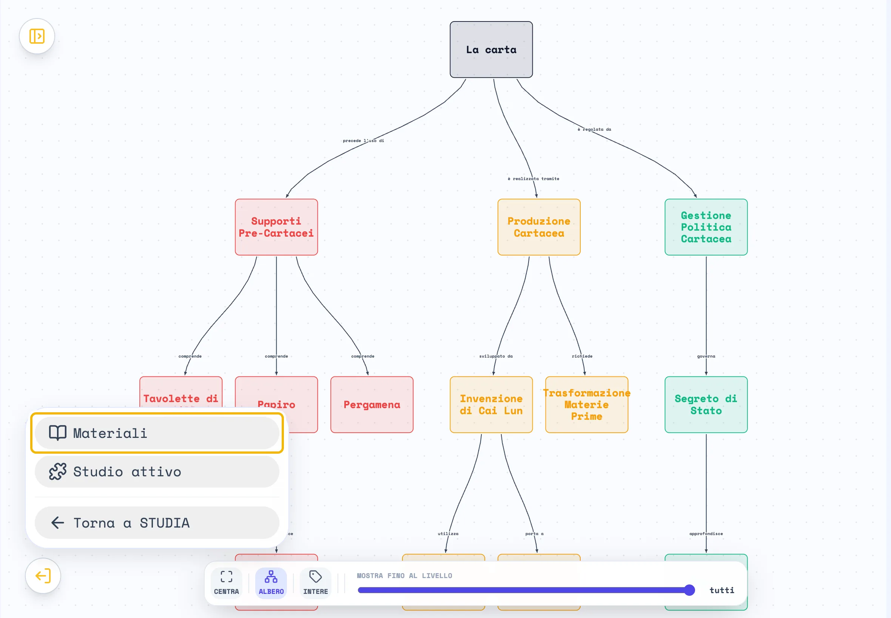
Materiali: i documenti accanto alla mappa (capitolo 4).
Studio attivo: le prove, la heat map e i tuoi progressi (capitolo 6).
Torna a STUDIA: torni alla pagina delle tue mappe.
Tocca di nuovo il bottone giallo per chiudere il menu.
4I materiali e la sintesi
Tocca Materiali. A destra si apre un pannello; la mappa resta a sinistra.
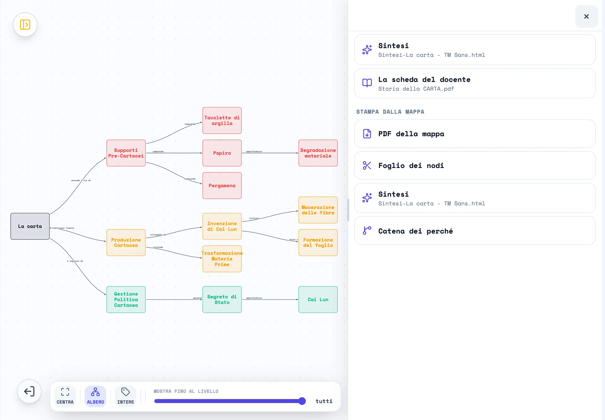
In alto ci sono i documenti del docente: la Sintesi e La scheda del docente.
Sotto, in Stampa dalla mappa, puoi farti tu il PDF della mappa, il Foglio dei nodi e la Catena dei perché.
Tocca la Sintesi: la leggi accanto alla mappa.
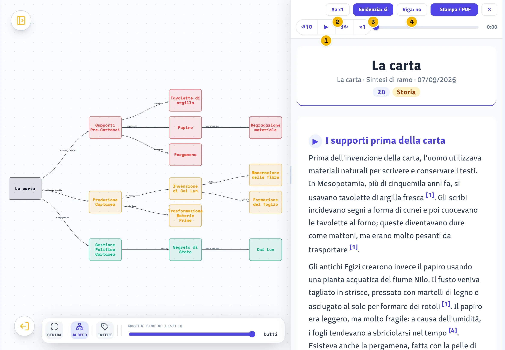
Ascolta: l'app legge la sintesi ad alta voce. Accanto ci sono i tasti per tornare indietro o andare avanti di qualche secondo.
Aa x1: il testo più grande. Un tocco per 1,5 volte, un altro per 2 volte, un terzo per tornare normale.
Evidenzia: mentre ascolti, la frase letta si colora e la pagina la segue.
Riga: oscura la pagina tranne una striscia, per non perdere il rigo. Un tocco la fa stretta, poi media, poi larga, poi la spegne.
La × in alto a destra chiude il pannello.
5Le flashcard
Nella pagina Studia tocca Flashcard.
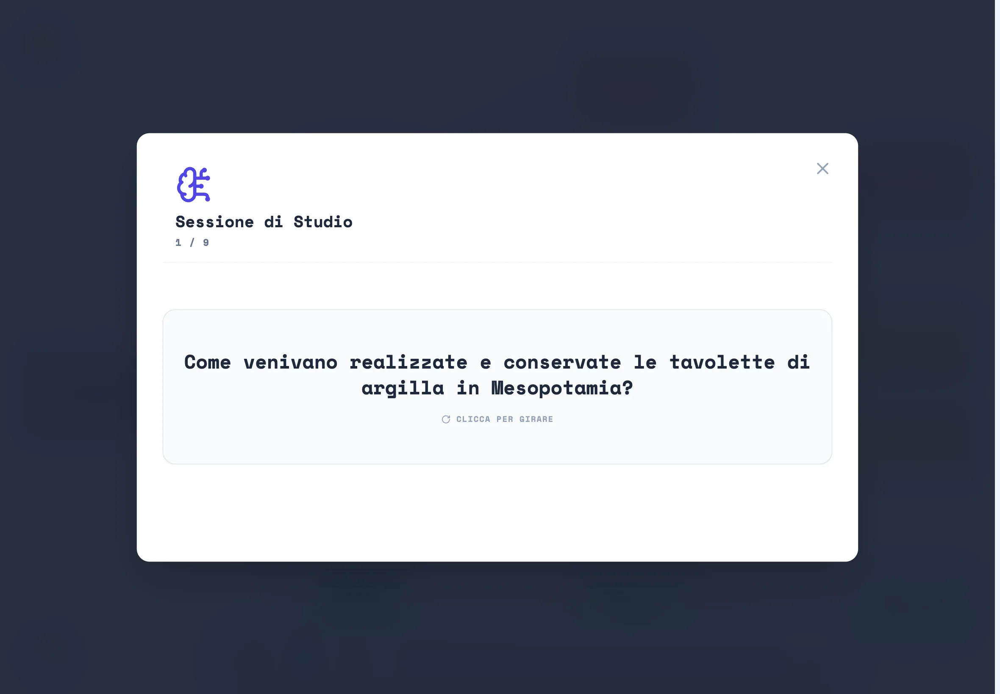
La domanda. Rispondi nella tua testa, poi tocca la carta.
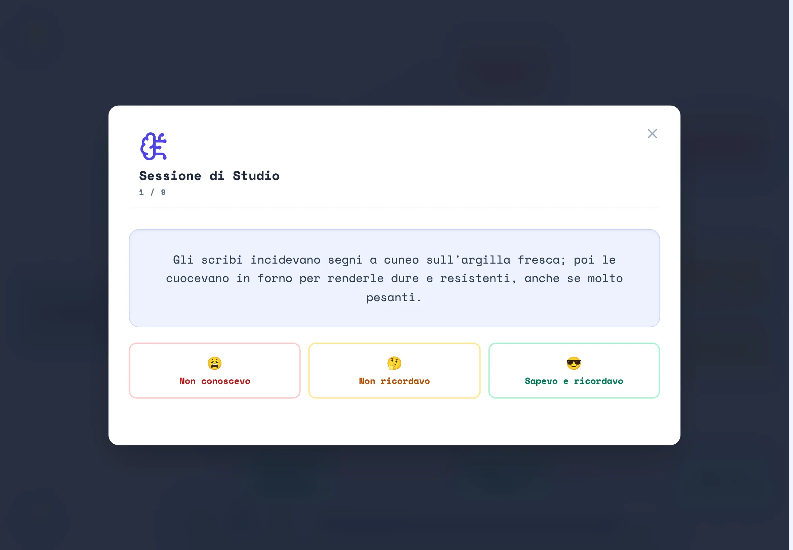
La risposta. Di' all'app come è andata.
Leggi la domanda e rispondi nella tua testa.
Tocca la carta: appare la risposta.
Scegli con sincerità: Non conoscevo, Non ricordavo oppure Sapevo e ricordavo. Poi arriva la carta dopo.
6Studio attivo: le prove
Nella pagina Studia tocca Prova (oppure, dalla mappa, menu › Studio attivo). Nella colonna a sinistra scegli che cosa fare:
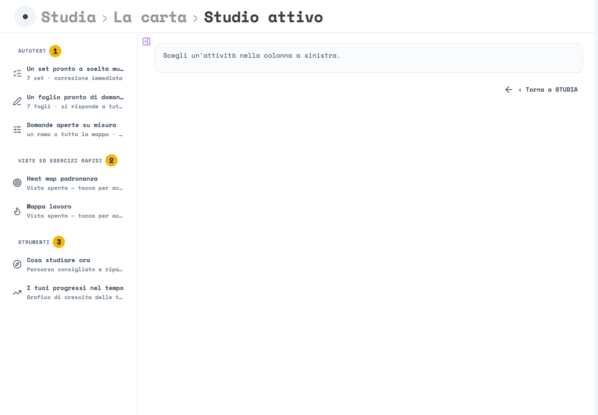
Autotest: Un set pronto a scelta multipla, Un foglio pronto di domande aperte, Domande aperte su misura.
Viste ed esercizi rapidi: la Heat map padronanza (capitolo 10) e la Mappa lavoro. Un tocco le accende, un altro le spegne.
Strumenti: Cosa studiare ora e I tuoi progressi nel tempo.
7Un quiz a scelta multipla
Tocca Un set pronto a scelta multipla e scegli un set.
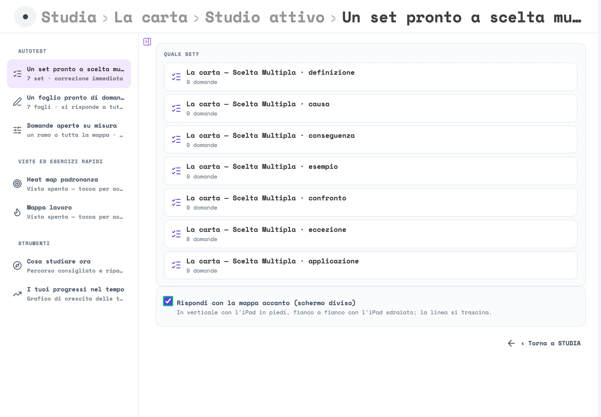
Se accendi «Rispondi con la mappa accanto (schermo diviso)», le domande stanno a destra e la mappa resta a sinistra, così puoi guardarla. Poi tocca Avvia.
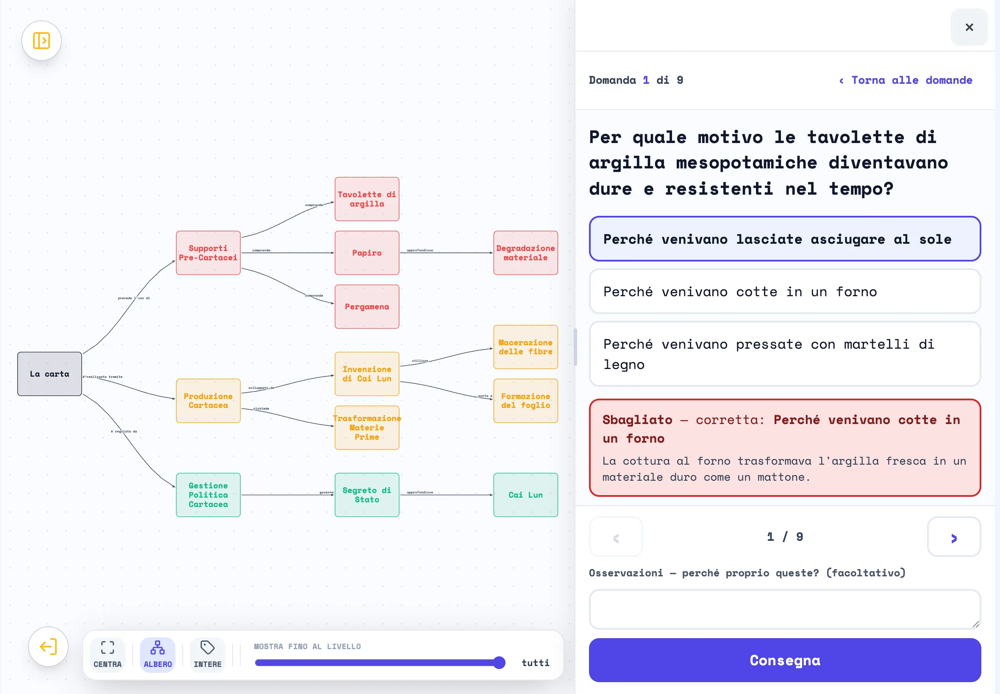
Tocca la risposta che scegli. L'app ti dice subito Giusto o Sbagliato, qual è la risposta corretta e perché.
Con ‹ e › passi da una domanda all'altra.
Quando hai finito tocca Consegna.
Lo schermo diviso segue l'iPad: sdraiato, mappa a sinistra e domande a destra; in piedi, mappa sopra e domande sotto. La linea tra le due parti si trascina col dito.
8Domande aperte su misura
Qui rispondi scrivendo. Tocca Domande aperte su misura e scegli:
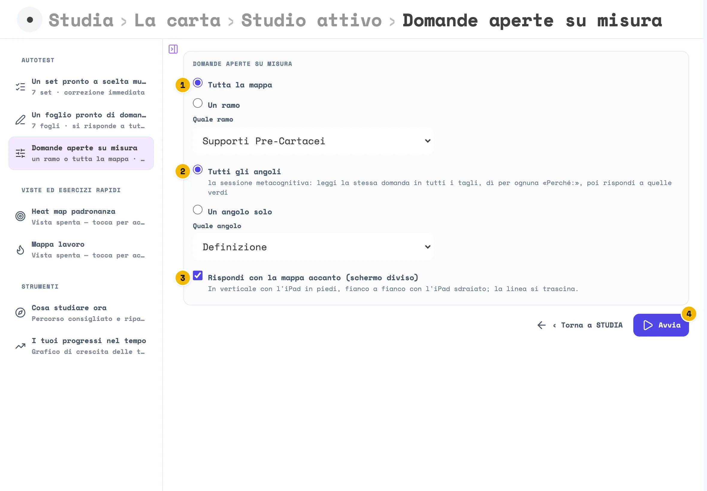
Tutta la mappa oppure Un ramo solo (e quale).
Tutti gli angoli oppure Un angolo solo (e quale).
Rispondi con la mappa accanto: lo schermo diviso.
Avvia.
Che cosa sono gli angoli? Sono modi diversi di chiedere: la definizione, la causa, la conseguenza, un esempio, un confronto, un'eccezione, un'applicazione.
Con «Tutti gli angoli»: prima leggi, poi scegli
Leggi le domande di un ramo in tutti i modi. Tocca una domanda: sotto Perché: scegli un colore.
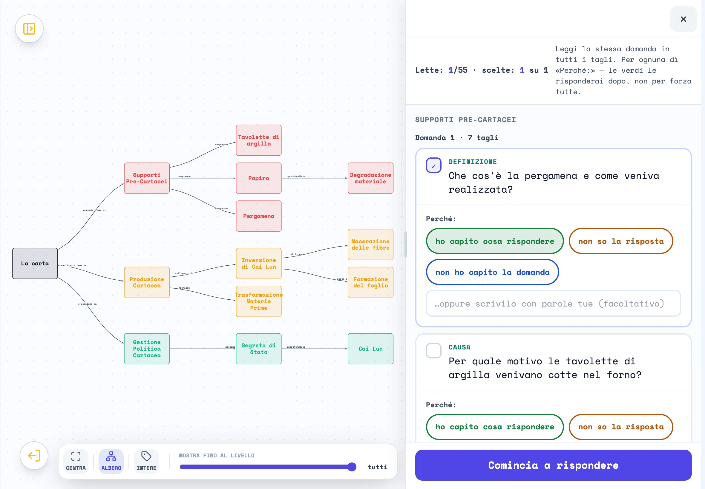
verde = ho capito cosa rispondere. La domanda diventa tua (compare la spunta).
arancione = non so la risposta.
blu = non ho capito la domanda.
Se vuoi, scrivi il perché con parole tue.
Non devi rispondere a tutte. Quando sei pronto tocca Comincia a rispondere.
Rispondere
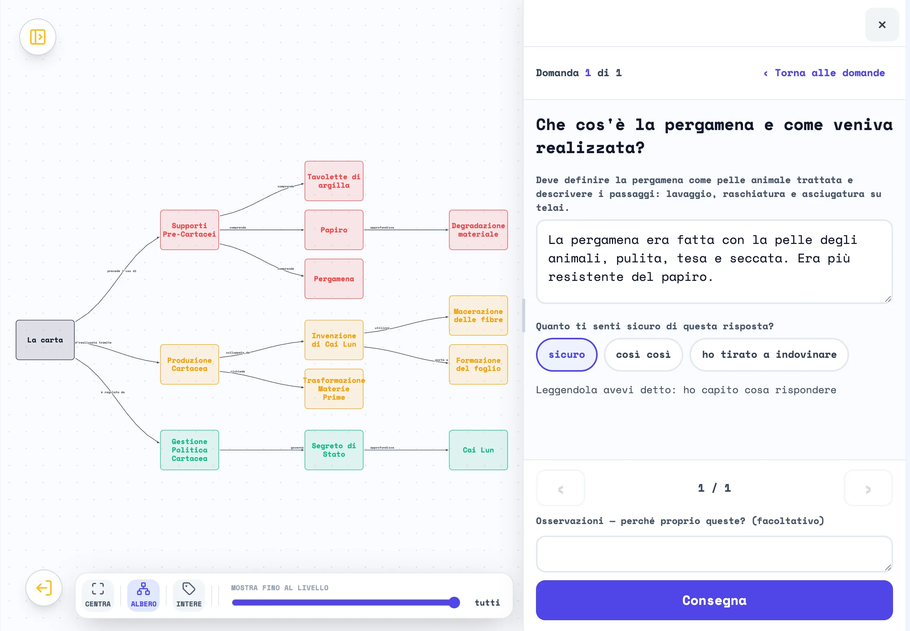
Scrivi la risposta nella casella.
Poi di' quanto ti senti sicuro: sicuro, così così o ho tirato a indovinare.
Se il docente ha scritto i criteri, al loro posto c'è il bottone Ho risposto: controlla coi criteri. Dopo averlo toccato la risposta non si cambia più: spunta i criteri che hai davvero scritto.
Alla fine tocca Consegna.
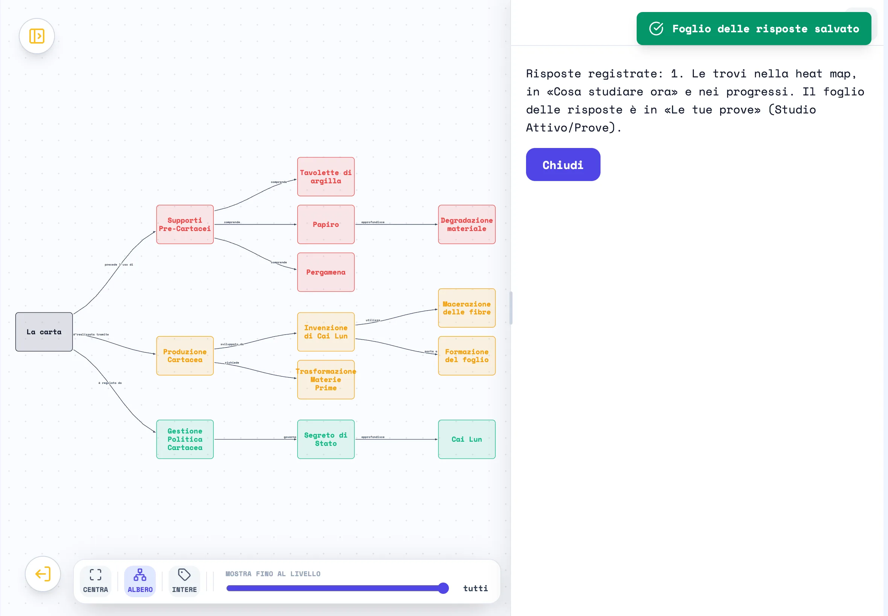
Dopo la consegna: «Foglio delle risposte salvato».
9Le tue prove
Ogni prova consegnata compare nella pagina Studia, nella tabella Le tue prove.
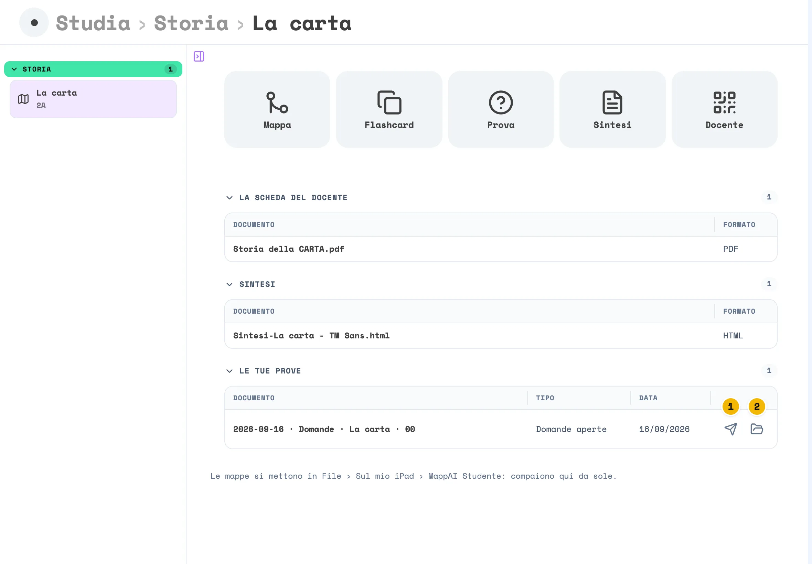
Consegna al docente (l'aeroplanino): manda la prova al computer del docente (capitolo 11).
Apri nei File (la cartella): da lì puoi mandarla con Mail o AirDrop, o salvarla.
Per le domande aperte l'app scrive un PDF con le tue risposte.
Per i quiz a scelta multipla scrive un report con le risposte giuste e sbagliate.
Nell'app File li trovi in MappAI Studente › la tua mappa › Studio Attivo › Prove.
10La heat map
In Studio attivo tocca Heat map padronanza: la scritta diventa «Vista ATTIVA». Apri la mappa: in basso a sinistra compare la legenda Padronanza.
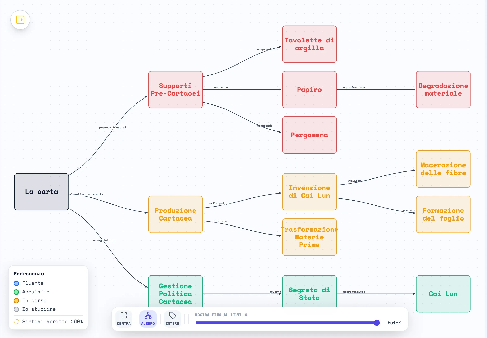
I colori dicono quanto sai ogni parte della mappa: Fluente, Acquisito, In corso, Da studiare. Si riempiono man mano che fai le prove. Per spegnerla tocca di nuovo Heat map padronanza.
11Il docente: ricevere e consegnare
Nella pagina Studia tocca Docente. Serve in classe, quando sei sulla stessa rete Wi-Fi del computer del docente.
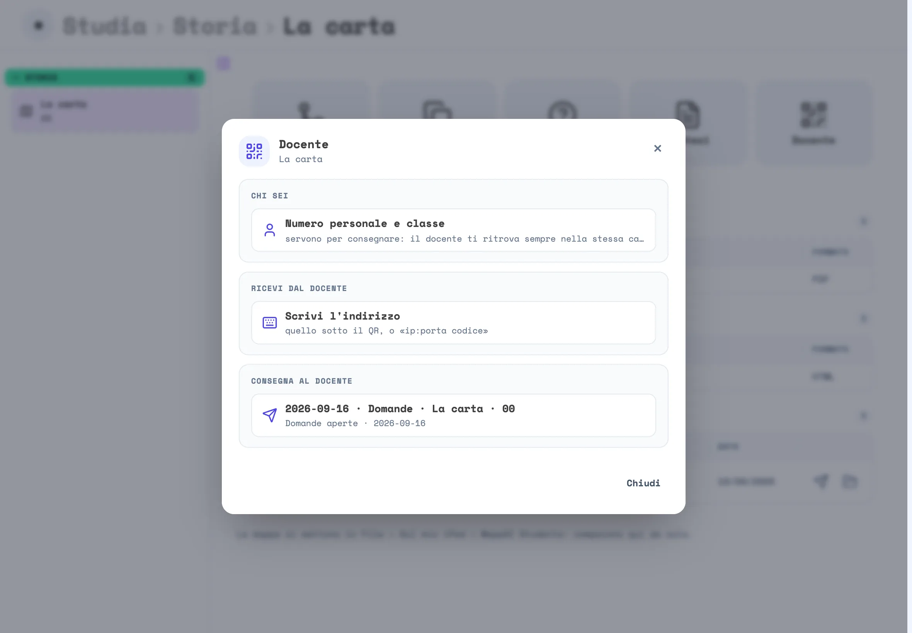
Chi sei: la prima volta scrivi il tuo numero personale (quello del registro) e la classe, per esempio 2B. Poi tocca Salva. Lo fai una volta sola: così il docente trova sempre i tuoi file.
Ricevi dal docente: il docente mostra un codice QR. Tocca Inquadra il QR del docente e punta la fotocamera. Se la fotocamera non va, tocca Scrivi l'indirizzo e copia quello scritto sotto il QR. La mappa arriva nella pagina Studia.
Consegna al docente: tocca la prova da consegnare. Con le spunte puoi aggiungere anche il report e i tuoi record di studio. Poi tocca Consegna.
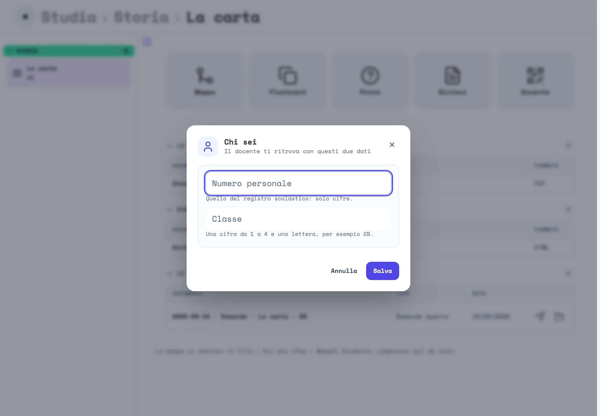
«Chi sei»: numero personale e classe.
Se l'app dice che non raggiunge il computer del docente, controlla di essere sul Wi-Fi della classe. Se il QR è scaduto, chiedi al docente di mostrarlo di nuovo.
12La Cabina e se qualcosa non va
Il pallino in alto a sinistra della pagina Studia apre la Cabina.
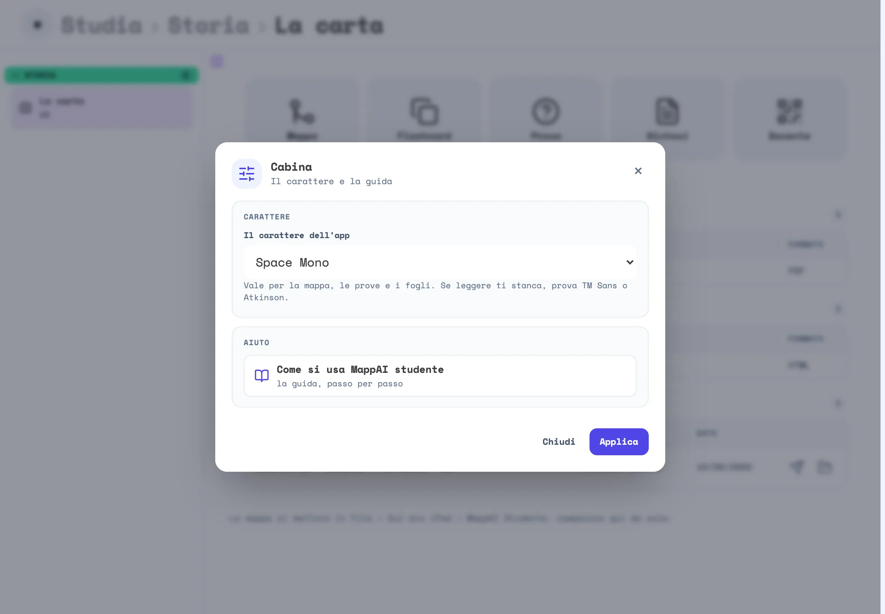
Carattere: se leggere ti stanca, scegli TM Sans o Atkinson e tocca Applica.
Aiuto: Come si usa MappAI studente apre questa guida.
«Prova» dice che non ci sono fogli? La cartella del docente non ha le domande aperte. Chiedigli di salvarla di nuovo con MappAI.
Vuoi tornare indietro? In alto ci sono le briciole: Studia › materia › mappa. Tocca dove vuoi andare.
Toccando un nodo non succede niente? Tieni premuto (capitolo 2).
L'app non manda niente su internet. Le tue risposte restano nella cartella della mappa, sul tuo iPad, finché non le consegni tu.